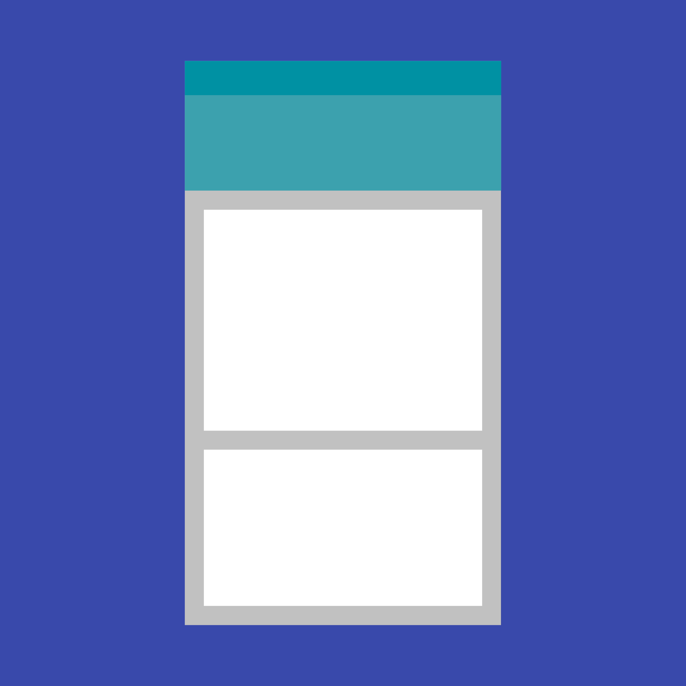

卡片通常是通往详细信息的入口。
卡片可以包含一个主题的照片、文字和链接。它们可以显示包含不同尺寸的元素，例如多种标题的照片。
卡片集合是多个卡片在同一平面上这样的布局。

卡片通常是通往详细信息的入口。
卡片可以包含一个主题的照片、文字和链接。它们可以显示包含不同尺寸的元素，例如多种标题的照片。
卡片集合是多个卡片在同一平面上这样的布局。
卡片是便捷入口，它通过展示多种元素组成的内容。它也可以展示不同尺寸和操作的元素，例如多种标题的照片。
卡片示例
卡片集合是多个卡片在同一平面上这样的布局。
卡片集合示例
卡片集合示例
何时使用
展示以下内容时可以使用卡片布局：
对
1、卡片是圆角。
2、卡片可以有多种操作。
3、卡片可以被移除和重新排列。
错
这是磁帖，不是卡片
1、磁帖是直角。
2、磁帖的操作不超过 2 个。
对
列表可以进行快速浏览，在展示无需太多操作的同类内容时，使用列表会更合适。
错
在这里用户无法进行快速浏览，因为卡片分散了他们的注意力。而且列表是不可移除的，因此使用卡片会让人很困惑。
对
用网格磁帖来展示图片库，显得很简洁清爽。
错
没有必要在图片库（同类内容）中使用卡片。
卡片提供上下文、及通往详情视图的入口，并且卡片的内容和数量可以有很大的差异。卡片集中的每一个卡片都可以包含独特的数据集，例如含操作的选项列表、含操作的笔记、含图片的笔记。
不要在卡片中展示无关紧要的内容或操作。
使用卡片的层级来让用户的注意到主要信息。例如，把重要内容放在卡片的顶部，或利用排版来强调主要内容。
图片可以进一步加深卡片中的其他内容。不过，它们在卡片中的尺寸和位置取决于图片是主要内容还是对其他内容进行补充。
背景图
文本在与其有足够对比度的纯色背景上时最清晰。把文本放在背景图片上时，应保持文本的可读性。
卡片集合包含了多种布局。

卡片集合包含了多种类型的卡片和布局。
版面设计可以增强主要内容。
卡片集合中包含了多种布局和多种内容层级。
卡片的宽度不变，但高度是可变的。卡片的最大高度不能超过平台上可用空间，但它可以临时展开（例如，显示注释字段）。
卡片不会翻转来显示背面的信息。
卡片的手势在卡片集合中同样适用。
支持的手势包括：
卡片集合可以按日期、文件大小、字母顺序或其他参数排序或过滤。
卡片的排列顺序是从左到右、从上到下。
卡片集合只能垂直滚动。
当内容超过卡片的最大高度时会被截断，而不能滚动，但是卡片可以展开。展开后，卡片可能会超出视图的最大高度。在这种情况下，卡片将随着集合一起滚动。
当内容超过卡片的最大高度时会被截断，而不能滚动。
对
卡片无需滚动就可以展开显示更多内容。
错
手机上应当避免在卡片内部出现滚动条，因为这可能导致视图内同时出现两个滚动条。
在桌面上，卡片内容可以展开和滚动。
当在卡片上遍历焦点时，在焦点切换到下一张卡片之前，应该能够遍历到所有卡片内能获得焦点的元素。
对于依赖焦点遍历进行导航的设备（D-pad 和键盘），卡片应该拥有主操作，或者打开一个包含主操作和补充操作的新视图。
遍历焦点时选中一个操作

展开后，补充文本变的可见，此时焦点落在了展开补充文本的操作上。
卡片中的主要操作通常是卡片本身。
根据内容类型和预期的结果，集合中的各个卡片之间的补充操作也会各不相同。例如，播放电影和打开书籍的操作是不同的。集合中的卡片始终有定位操作。
卡片中的补充操作通常放置在卡片底部，通过图标、文本和 UI 控件执行。
除了弹出菜单外，补充操作最多为两项。
含操作区、富媒体和文本的卡片
含 2 个操作区域、可选的头部、富媒体、文本和补充操作的卡片
含 4 个操作区域、可选的头部、富媒体和补充操作的卡片
含 2 个操作区域、可选的头部、文本和补充操作的卡片
UI 控件（如滑块）与主内容放在一起时，会改变主内容的视觉效果。例如，使用滑块来选择日期，使用星星来为内容打分，或者使用分段按钮来选择日期范围。
这个卡片在操作区域有 UI 控件。
这个卡片在操作区域有分段按钮。
这个卡片在操作区域有滑块。

这个卡片在操作区域有选项卡。
弹出菜单通常放在卡片的右上角，但也可以放在右下角，如果这样可以改善内容布局和增加识别度的话。
注意不要在菜单中放置太多选项。
这个卡片在右上角有一个弹出菜单。
强烈不推荐在文本内容中使用行内链接。
尽管卡片可以提供多个操作、UI 控件、和弹出菜单，但需要谨慎使用，并谨记卡片是通往更详细信息的入口。
对
将卡片作为通往更详细信息的入口。
错
卡片提供上下文、及通往详情视图的入口。不要在卡片中展示无关紧要的内容或操作。强烈不推荐在文本内容中使用行内链接。
卡片可以使用内容区块来组建，这些内容块包括：
调整区块可以强调不同类型的内容。例如，增加字号就可以强调数字。
平板／桌面端的卡片应当遵守 24dp 的关键线。更多详情请参考度量标准 & 关键线。
主标题上边距：24dp
主标题下边距：16dp
操作区域边距：8dp
说明文本上边距：16dp
说明文本下边距：24dp
富媒体
区块宽高比：16:9 或 1:1（推荐值）
操作
内边距：8dp
主标题／文本
标题：24sp 或 14sp
子标题：14sp
左右边距：16dp（手机端）
平板／桌面端的卡片应当遵守 24dp 的关键线。更多详情请参考度量标准 & 关键线。
上边距：16dp 或 24dp（使用大标题时）
下边距：24dp（有附加操作和说明文本时为 16dp）
说明文本
说明文本：14sp
左右边距：16dp（手机端）
平板／桌面端的卡片应当遵守 24dp 的关键线。更多详情请参考度量标准 & 关键线。
上边距：16dp
下边距：24dp（有附加操作和说明文本时为 16dp）
项目符号点（不是文本），图片和按钮可以忽视 16dp 的内边距。
手机上的卡片外边距
从屏幕边缘到卡片的边距：8dp
卡片之间的间隙：8dp
响应式 UI
在大屏幕设备上，卡片的间隙和边距可以发生变化，只要遵循 Material Design 8dp 的基准网格。卡片间隙和边距可以是 8、16、24 或 40dp。
边距和间隙不一定要相等。例如，在同一个布局中可以使用 40dp 的边距和 24dp 的间隙。
动画中展示了边距和间隙的变化：
海拔
卡片的静止海拔：2dp
卡片升高的海拔：8dp
卡片的默认海拔是 2dp。
在桌面端，卡片的静止高度可以是 0dp，鼠标悬浮时可以升高到 8dp。
卡片的静止海拔是 2dp，升高的海拔是 8dp
在桌面端，卡片的静止高度可以是 0dp（左图），鼠标悬浮时可以升高到 8dp（右图）。
（仅限桌面端）
以下示例列出了内容块的一些可能组合。
媒体区域
说明文本
头像、标题和子标题区域
媒体区域
说明文本
操作
头像、标题和子标题区域
媒体区域
操作
媒体区域
主要文本
副文本
操作
媒体区域
主要文本
副文本
操作
展开的说明文本
主要文本
Subtitle
副文本
说明文本
操作
媒体区域
操作
媒体区域
主要文本
副文本
操作
媒体区域
主要文本
操作
媒体区域
主要文本
副文本
操作
媒体区域
主要文本
副文本
操作
媒体区域
主要文本
副文本
操作
媒体区域
操作
分隔符可以用于分隔卡片中需要有视觉区分的内容区域。分隔符还可以指示内容展开时的接缝位置。
内容区域可以展开时，应该使用全宽度的分隔符。分隔符可以指示内容展开时的接缝位置。
此示例使用全出血分隔符。和扩展列表类似，此卡片使用全宽度的分隔符来表示扩展区域。
需要更明确的视觉分离的内容区域应使用分隔符。
示例使用全出血分隔符，来区分滑块和列表下方的操作。
使用内嵌式分隔符来分隔相关内容。
示例使用内嵌式分隔符来区分餐厅信息和预定部分。